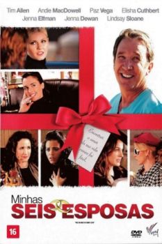

Minhas Seis Esposas (2009)


Can't live with them - can't live without them.

Avaliação (TMDb):


5.2/10 (63 votos)
Avaliação (Usuário):
Outro Título:The Six Wives of Henry Lefay
País:United States, 95 minutos
Idiomas falados:Inglês, Português
Gênero(s):Comédia
Diretor(s):Howard Michael Gould
Codec:MPEG-2 (DVD)
Número: 1813
Sinopse:
Uma filha de luto tenta organizar o funeral de seu pai e coloca-se frente à frente com todas as suas ex-esposas.
Elenco:
Elisha Cuthbert, Tim Allen, Jenna Elfman, Andie MacDowell, Lindsay Sloane, Jenna Dewan, Paz Vega, Edward Herrmann, S. Epatha Merkerson, Larry Miller
Tipo de mídia: DVD5,
Legendas: Inglês, Português
Alugado: Não
Tela: 2.35:1